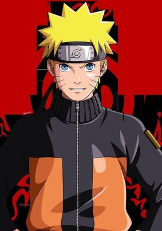
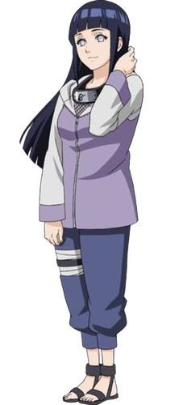
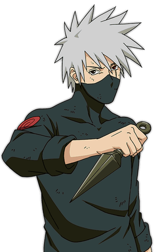

火影忍者简介
《火影忍者》是日本漫画家岸本齐史的代表作，作品于1999年开始在《周刊少年JUMP》上连载，于2014年11月10日发售的JUMP第50号完结；后日谈性质的外传漫画《火影忍者外传：第七代火影与绯色花月》则于同杂志2015年第22、23合并号开始短期连载，至同年第32号完结。
故事成功地将原本隐藏在黑暗中，用世界上最强大的毅力和最艰辛的努力去做最密不可宣和隐讳残酷的事情的忍者，描绘成了太阳下最值得骄傲最光明无限的职业。在岸本齐史笔下的忍者世界中，每一位年轻的忍者都在开拓着属于自己的忍道。
| 类型 |
内容 |
| 中文名 |
火影忍者 |
| 原版名称 |
NA RU TO -ナルト- |
| 别 名 |
狐忍 |
| 作 者 |
岸本齐史 |
| 类 型 |
少年漫画 |
| 地 区 |
日本 |
内容概要
- 为了准备即将到来的战争，并保护八尾和九尾，鸣人被送往云隐村准备的秘密基地，在那里遇到八尾人柱力奇拉比，并向他学习控制九尾的方法。鸣人在精神世界中遇到母亲玖辛奈，玖辛奈告诉了他关于他出生那天发生的事情，以及九尾入侵木叶的真相。鸣人在母亲的帮助下成功地控制了九尾，并得到了新的力量，察觉到了暗中潜入此地的鬼鲛的存在。打算逃走的鬼鲛与阿凯交战，被阿凯打倒，为了守护情报而自杀。
- “阿飞”为了夺取轮回眼来到雨隐村，并杀死守护长门遗体的小南，更和获得大蛇丸力量的兜联手，以兜的秽土转生大军和“阿飞”的白绝大军发动了战争。五大国的忍者们也团结一致，组成忍者联军，第四次忍界大战终于开战。鸣人在修行期间察觉到外面有战争，和奇拉比一同赶往战场，而佐助也在移植了鼬的眼睛之后赶往战场。
- 秽土转生的忍者们和白绝接连被打倒，这时兜突然把真正的宇智波斑利用秽土转生召唤出来。五影为了对付斑而一同赶到战场，鸣人和奇拉比则与“阿飞”和人柱力军团展开战斗。佐助在赶往战场的途中与秽土转生的鼬相遇，为了向鼬询问当年的事情而追赶鼬，和鼬一同来到兜的根据地，两人联手打倒了兜。鼬解开了秽土转生之术，和佐助告别，而佐助则为了寻找答案而利用红豆身上的咒印复活了大蛇丸，和“鹰”的成员一起前往木叶隐村，利用秽土转生之术使历代火影复活。佐助从初代火影那里得到了自己想要的答案，希望能守护鼬的意志，而和历代火影一同赶往战场。
- “阿飞”的面具在鸣人等人的奋战之下被打碎，众人也发现“阿飞”的真实身份竟然是卡卡西的昔日挚友宇智波带土。带土当年在大战期间处于濒死状态时被斑所救，由于目睹卡卡西杀死琳的瞬间而对世界陷入绝望，此后便继承斑的意志打算实现“月之眼计划”。带土和斑复活了集结所有尾兽力量的十尾，鸣人这边也集合忍者联军的全部力量与敌人展开战斗，而佐助也随后赶到，昔日的第七班终于再次重聚。
- 带土变成了十尾人柱力，以强大的实力一度让众人陷入苦战，并打算利用十尾的本体神树发动月之眼，但在众人的奋战之下其体内的尾兽也被抽离，鸣人说服带土重新正视自己。带土在奄奄一息之时遭到黑绝的控制而发动轮回天生之术使斑完全复活，斑抽离了鸣人体内的九尾，又用剑刺穿了佐助的身体，在夺取了全部尾兽之力后成为十尾人柱力。阿凯为了打倒斑而开启八门遁甲，差一点便将斑逼入绝境，但阿凯最后还是因为力量耗尽而倒地。
- 鸣人和佐助在生命垂危之际见到了六道仙人，被六道仙人引导获得更加强大的力量。重返战场的鸣人和佐助利用六道之力将斑完全压制，但斑在夺回了轮回眼之后开始施展无限月读，让全人类陷入了幻术当中。鸣人、小樱和卡卡西受到佐助轮回眼须佐能乎的保护而幸免于难。
- 斑遭到黑绝的偷袭。黑绝利用斑的身体使六道仙人的母亲辉夜复活。辉夜的目的是利用无限月读制造白绝大军并取回自己的查克拉，为此而打算将妨碍她的鸣人等人抹杀，将在场的众人传送至自己的空间。第七班众人在辉夜的空间中与辉夜交战，得到鸣人救治而苏醒的带土也加入鸣人等人的阵营一同作战。
- 与此同时，留在原先世界的四位火影在机缘巧合之下召唤出六道仙人的查克拉。带土为了保护鸣人等人而被辉夜击杀，卡卡西暂得到带土写轮眼的力量而开启须佐能乎，第七班众人终于合力将辉夜封印，并在六道仙人的帮助下回到原来的世界。斑在和柱间互相敞开心扉之后死去。六道仙人解除了秽土转生的忍术，水门在离开之前对鸣人祝贺“生日快乐”，鸣人也向水门说出了自己一直以来没有说出口的各种话语。
- 佐助说出自己的真正目的是“革命”，为此要将现任五影一并处决，并将终于重获自由的九大尾兽再次囚禁。在六道仙人对这样的结果表示无奈之际，鸣人告诉他自己必将阻止这样的轮回，并与佐助再一次展开决战。两人在当初的老地方终末之谷战斗，并在战斗中确认了对方的心意。再最后两人各失一臂，再也无力站起来时，终于说出了自己对对方的认同。最终佐助认同了鸣人的道路。
- 二人共同解除了无限月读，包括真正的阿飞在内的所有剩余白绝也都随无限月读的解除而死亡，忍界重新恢复了和平。数月后，卡卡西成为第六代火影。而佐助决定离开木叶游历世界，与鸣人等人道别……
- 时光飞逝，在大战结束后十几年，当年的年轻忍者们已经各自成家立业，而鸣人也终于实现了他成为火影的梦想，作为火之意志的继承者，守护着村子里的人们……（完）
登场角色

漩涡鸣人

日向雏田
经典语录：
永不放弃，这就是我的忍道。有话就直说，这也是我的忍道!

旗木卡卡西
经典语录：
打破忍者世界规则的人，我们都叫他废物…可是，不懂得重视同伴的人，连废物也不如!